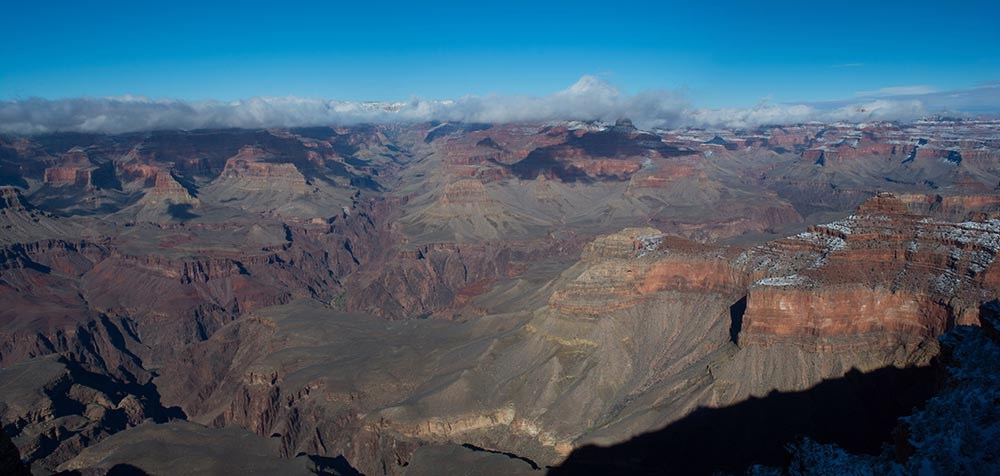

Earlier this year I moved my little sister from Nashville to LA. On our drive west, we stopped at the Grand Canyon. It was late February and we had been battling the snow since Oklahoma. When we arrived at the Grand Canyon around 9am in the morning, we excitedly went to the first lookout and were met with this view.
The canyon was filled with clouds and snow. You could only make out small areas right below where you were standing. Was the Grand Canyon even there? We spent some time at the visitor center hoping for the clouds to clear. No luck. In fact, watching the video about the Grand Canyon increased our disappointment. This was to be the highlight of our drive and it looked like it was going to turn into a bust. So we went and had lunch. When we came back out, we were in a different place. The clouds had started to clear and before us was a new beauty, a new day.
The altMBA experience is like this too. You come in cloudy. You don’t know what to expect…who you’ll meet…what you’ll learn. All you know is that you are to “trust the process” and you are ready for change. Except instead of waiting and hoping the clouds will clear, you work. You work hard! You write more than you’ve ever written. You open yourself up to people you just met who live hundreds or thousands of miles away from you. You learn to engage others in conversations that push each other forward. You re-discover that there’s power in working with a group of people who share a common goal.
My biggest take aways? Change is possible. Show your work! Be vulnerable. Open yourself up to feedback. Push yourself and those around you to do better.
I’ve been a doer for most of my life. “Give it to Mandy, she’ll get it done.” I am no longer just a doer. I am a creator. An idea maker. An encourager. A catalyst for change. I am a ruckus maker.With this renewed confidence in myself, I’m am glad to say that the clouds are lifting and the forecast calls for sunny skies!
